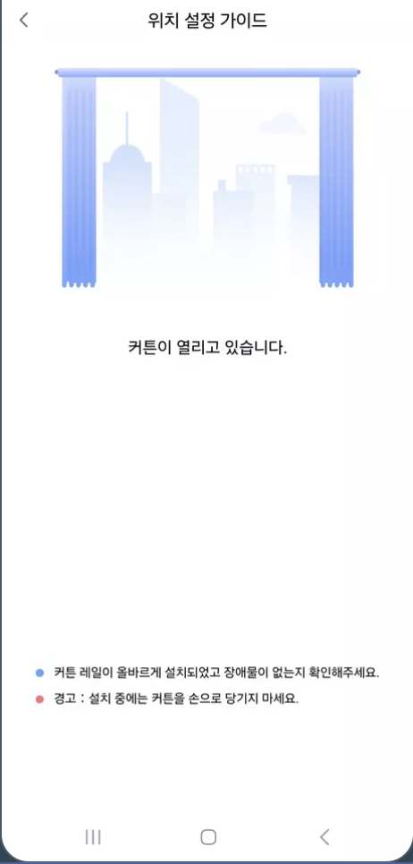

39 스마트 커튼 컨트롤러
39.1 설치 - 기본
질문 5: 커튼 박스가 없는 경우에도 콘크리트 천장에 편개형 커튼 레일 장착이 가능한 지요? 샤시 끝나는 부분에서 바로 직각으로 벽이 맞닿아 있습니다. 샤시프레임까지의 넓이가 3420 사이즈인데 벽끝에서 끝의 길이도 한 3440 정도라고 보면 될 것 같습니다.

답변 5:
편개형은 모터 장착 부분이 한쪽에만 배치 되어 있습니다. 커튼 박스가 없는 경우는 커튼 레일 설치를 샷시에 직접하셔야 합니다., 이 경우 ㄱ자 브라켓이 필수이기 때문에, 커튼 컨트롤러과 커튼 레일을 구매하실 때 ㄱ자 브라켓 추가 구매하시는 것을 추천합니다. 전체 벽면과 창문의 길이 차이가 크지 않기 때문에 창문만 가리는 방식으로는 제작 추천 드리지 않습니다. 따라서 양쪽 끝 벽~벽 길이에서 4cm 제외한 사이즈로 커튼레일을 준비하시면 됩니다. 아래 왼쪽 그림을 참고하십시오.
39.2 설치 - 실무 가이드 (설치 과정 참고용)
39.2.1 주의 사항
본 제품은 실내 전용 제품으로 설계되었으므로 실외나 습한 환경에서 사용하지 마시기 바랍니다.
본 제품에 물 또는 액체를 엎지르는 경우 고장, 감전 및 화재의 위험이 있습니다.
본 제품을 열원 부근에 설치하지 마십시오.
본 제품을 임의로 분해, 수리, 개조하지 마십시오. 수리가 필요한 경우 support@aqara.kr로 연락하십시오.
39.2.2 커튼 주문시 확인 사항
- 주문 가이드는 아카라라이프 협력사 제품 기준이며, 호환 레일을 사용할 경우 해당 제조사의 가이드를 따릅니다.

커튼박스 공간은 최소한의 요구조건으로 암막 커튼과 쉬폰 커튼을 조합하여 2개의 레일을 설치할 경우 20cm 이상의 공간을 권장합니다.
벽면 전체를 가릴 경우 실측 사이즈에서 총 -4cm 길이로 주문합니다. 벽면에 콘센트가 부착되어 있어나 요철이 있을 경우 1~2cm 정도 더 작게 주문합니다. (설치 공간에 따라 판단)
주문형 레일 제품은 주문 당시 모터 위치, 열리는 방향을 정해서 주문하는 방식입니다.

전동 커튼에 적용할 커튼은 위의 가이드를 참고하여 준비합니다.
39.2.3 커튼 레일 설치시 필요 공구
39.2.4 커튼 설치시 사전 점검 사항
39.2.5 커튼 레일 및 모터 설치
- 아래 설치 가이드는 아카라라이프 협력사의 주문형 제품 가이드로, 호환 제품 사용시 해당 제품 가이드를 참고하시기 바랍니다.
패키지 내에 기본 구성품이 모두 제대로 들어 있는지 확인합니다.
레일 조립시 벨트나 캐리어가 이탈하지 않도록 주의합니다.


캐리어가 움직이지 않을 경우, 지나치게 힘을 주면 벨트에 손상이 생길 수 있습니다.
커튼 박스에 브라켓 부착에 방해가 되는 요소가 없는지 확인 후 위치를 잡아주세요.
커튼 박스가 합판일 경우 동봉된 피스로 고정할 수 있고, 콘크리트 및 석고보드일 경우 그에 맞는 피스를 이용하여 설치합니다. 커튼(천)이 있을 경우 레일 끝부분에 커튼을 걸면 모터가 자연스럽게 가려집니다.
커튼 고리를 추가할 경우, 위와 같이 조치할 수 있습니다.
노출 전선중 노랑/녹색 전원은 접지선입니다. 플러그에 결선할 때 접지선을 제외하고 시공해고 특별히 문제는 없습니다.

커튼 컨트롤러와 풀리를 결합할 때 사용하는 상단 고리입니다, 아래쪽으로 당긴 후 옆으로 이동 시키면 커튼 레일을 고정할 수 있습니다.

커튼 컨트롤러를 풀리 홈에 맞춰 끼웁니다.

위치를 잡은 후 고리를 당겨 옆으러 밀어서 단단하게 고정하면 물리적인 설치가 완료됩니다.
39.2.6 앱 초기 설정(리미트 포함)
- 커튼 컨트롤러를 설치하는 과정에서 반드시 아카라홈앱에서 아래와 같이 “상하단 설정 가이드”를 통해서 열고 닫힘의 리미티를 설정하셔야 합니다.
(1) Aqara Home앱에 스마트 커튼 컨트롤러를 추가 후 실행하면, 다음과 같은 화면이 보입니다. 먼저 하단의 열림/닫힘을 클릭하여 방향이 맞는지 확인합니다. 그리고, 우측 상단 ‘…’ 설정탭을 클릭합니다.

(2) 기기 설정 클릭(아래 2번째 그림) 합니다.

(3) 위 3번째 그림에 보이는 것처럼 4가지 설정을 하실 수 있습니다.
커튼 모드: 커튼 형태 설정
소프트 터치: 가벼운 터치로 커튼 열고 닫음
커튼 열림/닫힘 방향 반전: 열고 닫힘 방향 확인
상하단 설정 가이드 (위 4번째 그림): 열고 닫힘 리미트 조정 (가이드에 따라 진행)

39.3 사용팁
질문 5: 커튼이 중간에 멈추었습니다.
답변 5:
커튼 트랙에 장애물이 있는지 확인해 주세요.
앱에서 “설정 초기화” 명령을 통해 모터의 경로를 지우고, 다시 시도해 보세요.

39.4 Troubleshoot
질문 1: 길이 조절형 DIY 레일 패키지 스마트 자동 전동커튼을 구매했습니다. 레일 설치는 완료했는데 닫히는 것은 다 닫히는데 열리다가 중간에 멈춤니다. 어떻게 해야 하는지요?
답변 1:
열고 닫힘 리미티 조정으로 문제를 해결하실 수 있습니다. 다음 절차에 따라 열고 닫힘 리미트를 설정하십시오.
질문 4: 커튼 컨트롤러의 좌우 리미트를 설정 중인데, 커튼이 모이는 곳에서 딸그락 소리를 내며 밀치는 과정이 있습니다. 레일을 교체해야 하는지요?
답변 4:
레일은 교체할 필요는 없습니다. 마스터 캐리어와 레일 사이의 나사가 좀 풀려 있을 수 있으니 조여 주시기 바랍니다.

질문 5: 커튼 컨트롤러와 레일이 체결이 안됩니다. 어떻게 해결하는지요?
답변 5:
다음과 같이 레버를 돌려 가면서 체결해 보세요.

만약 레버가 잘 움직이지 않을 경우 다음의 나사를 별형드라이버 (T10H 규격) 약간 풀어 주세요.